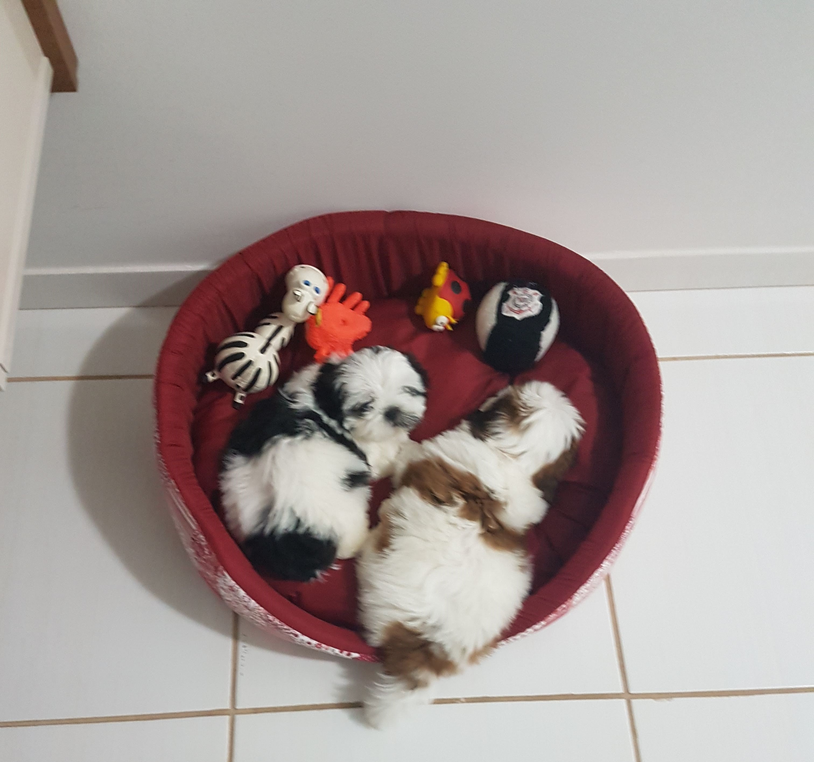
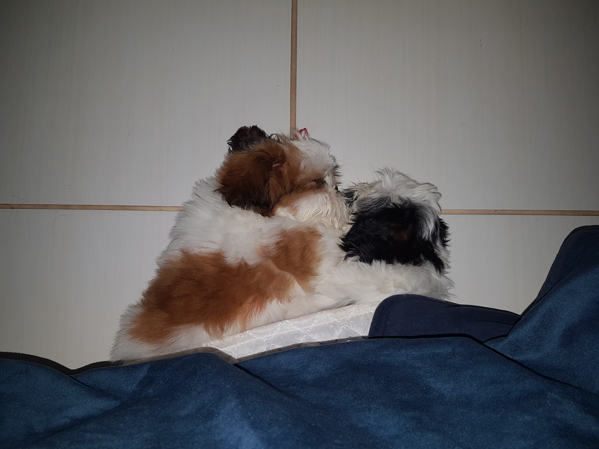
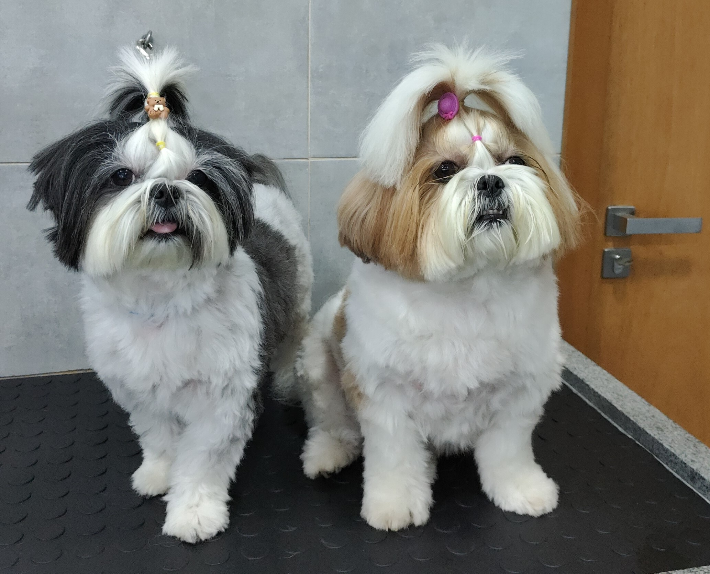

Dediquei essa seção a dois amores da minha vida: Marry e Pandora.

Essa foi a primeira foto delas após chegarem em casa, no final de 2019.
Elas são irmãs (nasceram juntas, são filhas dos dogs do meu padastro).
Esta foto é recente, após elas tomarem banho.